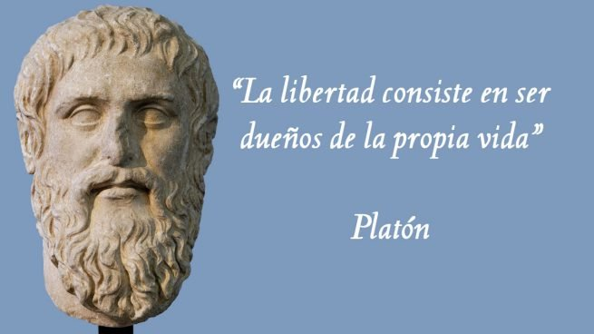
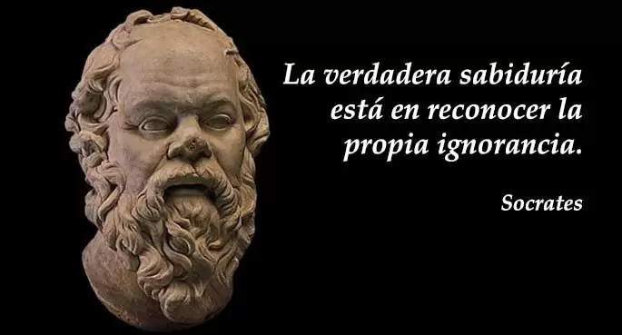

Frase:
No puedo enseñar nada a nadie. Solo puedo hacerles pensar (Sócrates)
La indiferencia es el peso muerto de la historia (Antonio Gramsci)
"¿Es el hombre sólo un fallo de Dios, o Dios sólo un fallo del hombre?" (NIETZSCHE)
Frase:
La peor lucha es la que no se hace (Karl Marx).
La verdadera grandeza consiste en hacer que todos se sientan grandes (Charles Dickens)
"Si me engañas una vez, tuya es la culpa; si me engañas dos, es mía" (ANAXÁGORAS)
Curiosidades acerca de René Descartes (1596 – 1650)
- Su padre le llamaba su «pequeño filósofo» porque René se pasaba el día planteando preguntas.
- La reina cristina de Suecia quería aprender filosofía, obligó a Descartes a levantarse a las 5 a.m. para darle clases. Las consecuencias de levantarse de madrugada en el clima más helado de toda Europa trajo secuelas, Descartes enfermó de pulmonía y falleció en lo más profundo del invierno sueco.
- Murió en 1650 en Estocolmo, su cadáver regresó a Francia por deseo de sus amigos, que creían que sus restos debían reposar en París. Exhumaron el cadáver y en un descuido, un capitán de la guardia trocó el cráneo privilegiado del racionalista por el de un desconocido, vendiéndolo a un coleccionista. La verdadera calavera de Descartes decoró las vitrinas de más de un caprichoso durante casi dos siglos.
- Aunque Aristóteles es considerado el padre de la filosofía, sus pensamientos y obras no pudieron haberse llevado a cabo sin la influencia de su mentor, Platón.
- Siendo discípulo de Platón, Aristóteles no compartía todas las ideas de su maestro. Esto se debe a que la filosofía de Aristóteles se basaba más en la objetividad que la de su mentor.
- La importante figura política Alejandro Magno recibió su educación del maestro Aristóteles. Desde su adolescencia, Magno fue instruido con temas de metafísica, política y biología de la mano del filósofo.
- Gracias a su pasión de enseñar acerca de distintas ramas de la ciencia y las humanidades, Aristóteles decide crear su propia escuela, fue fundada bajo el nombre de El Liceo, en honor al templo de Apolo Liceo.
- Imaginate que estas viendo un video eres tú o simplemente es tu cerebro colocado en una cubeta e inmerso en una realidad virtual que cree cierta pues esto que casi es el argumento de matrix ya lo pensó hillary putman en 1981 y no tiene respuesta posible porque si fueras un cerebro en una cubeta sujeto a otra realidad virtual que nunca hubiera experimentado su estado físico real no podrías pensar que eres un cerebro de una cubeta ni aunque te lo dijeran podrías tener la certeza de ello.
- La filosofía sirve para pensar te lo explicamos, la filosofía permite al ser humano reflexionar sobre sí mismo sobre el universo y por qué no sobre todo lo demás además de darle herramientas para distinguir estos eventos sus causas y consecuencias desarrollando el pensamiento crítico es decir te ayuda a preguntarte por las cosas a no quedarte con lo primero que te cuenten en definitiva a tomar decisiones más libres ya que no te engañen.
- La filosofía es la ciencia que complica las cosas que todo el mundo sabe y es un poco verdad porque la filosofía está llena de paradojas y reflexiones que ponen a prueba nuestra capacidad para pensar en direcciones que jamás nos habíamos planteado de todas maneras no desesperes porque aunque la filosofía crea el problema también en este caso crea la solución de la mano del monje guillermo de occam con su famosa navaja que dice que en igualdad de condiciones la explicación más sencilla suele ser la más correcta será
Aristipo fue el fundador de la que se conoce como escuela Cirenaica, la más famosa defensora de lo que solemos llamar hedonismo. Defendía el placer físico como la base de la felicidad, siempre que uno fuera capaz de no dejarse dominar por él.
Desde 1687 a 1690, Isaac Newton fue miembro del Parlamento británico en representación de la Universidad de Cambridge. Durante el tiempo que ostentó el cargo sólo pidió la palabra en una ocasión y fue para decir lo siguiente:
Propongo cerrar esa ventana porque aquí hace un frío considerable
Si abordas cada situación como asunto de vida o muerte, morirás muchas veces (Adam Smith)
Cree que tu vida merece la pena ser vivida y esa creencia ayudará a crear el hecho (William James)
Los grandes resultados requieren grandes ambiciones (Heráclito)
Vemos las cosas, no como son, sino como somos nosotros (Kant)
En algún lugar, algo increíble está esperando a ser descubierto (Carl Sagan)
A veces, lavándonos las manos, nos ensuciamos la conciencia (Anónimo)
El amor es mejor maestro que el deber (Albert Einstein)
El hombre, en su orgullo, creó a Dios a su imagen y semejanza.(Friedrich Nietzsche)
Frase:
Puede decirse que filosofía es una ciencia mediante la cual se pretende explicar el qué y el porqué de las cosas. No faltan críticos que se resistan a considerar la filosofía como una ciencia y prefieren referirse a ella como una disciplina científica, lo cual no es incorrecto; sin embargo, no es del todo inconveniente que dicha disciplina sea considerada una ciencia, pues, constituye evidentemente un saber, eso sí, no de índole experimental sino especulativo, y por ende, no sujeto al imperio dogmático la ciencia.

Nuestras convicciones más arraigadas, más indubitables, son las más sospechosas. Ellas constituyen nuestro límite, nuestros confines, nuestra prisión (José Ortega y Gasset).
La historia del mundo es la suma de aquello que hubiera sido evitable (Bertrand Russell)
La medida de la inteligencia es la capacidad de cambiar (Albert Einstein)
El castigo del embustero es no ser creído, aun cuando diga la verdad (Aristóteles)
El éxito es fácil de obtener. Lo difícil es merecerlo (Albert Camus)
Curiosidades acerca de Platón (427 – 347 a. C.)- Biógrafos le llaman así por la amplitud de su sabiduría, o por su ancha estructura corporal, o por el tamaño de su frente
- Su filosofía se basó en la distinción de lo real y lo aparente. Su nombre real era Aristocles.
- Platón pasó un tiempo en prisión. El motivo de su arresto fue denunciar a la tiranía de Dionisio I, quien vendió a Platón a la esclavitud un tiempo antes de destacar como filósofo.
El filósofo y poeta francés, Paul Valery, era una persona bastante desgarbada y que no le prestaba una atención especial a su imagen.
Cierto día, se le acercó una joven que le dijo:
- Su aspecto no hace pensar para nada que usted sea un elegido por las musas
- Tiene usted razón, señorita- replicó en voz baja y con tono misterioso -Es que yo soy de la poesía secreta
Nuestro carácter es el resultado de nuestra conducta (Aristóteles)
Nada me inspira más veneración y asombro que un anciano que sabe cambiar de opinión (Santiago Ramón y Cajal)
Algunas personas miran al mundo y dicen: ¿Por qué? Otras miran al mundo y dicen: ¿Por qué no? (George Bernard Shaw)
Al perro que tiene dinero se le llama señor perro (Proverbio Arabe)
La humanidad tiene una moral doble: una que predica y no practica, y otra que practica y no predica (Bertrand Russell)
La boca puede mentir, pero la mueca del momento revela la verdad (Friedrich Nietzsche)
A medida que avanza una discusión, retrocede la verdad (Anónimo)
La política es el campo de trabajo para ciertos cerebros mediocres (Aristóteles)
El mundo real es mucho más pequeño que el mundo de la imaginación (Friedrich Nietzsche)
La mayoría de los hombres persiguen el placer con tal apresuramiento que, en su prisa, lo pasan de largo (Soren Kierkegaard)
La libertad es algo maravilloso, pero no cuando hay que pagar por ella el precio de la soledad (Bertrand Russell)
Curiosidades acerca de Sócrates (470 – 399 a. C.)- Sócrates nunca publicó escritos filosóficos ni de ningún tipo, su alumno Platón si realizó diversos escritos relevantes para los filósofos. Hay dudas de que estas obras realmente fueron escritas por él y no por Sócrates.
- Uno de los pensamientos filosóficos de Sócrates establecía una relación directa entre la inteligencia y reconocer la ignorancia.
La filosofía no existiría como se conoce hoy en día sin el impacto del trabajo de Platón. Todo experto de esta doctrina reconoce que es uno de los filósofos más influyentes del mundo. A pesar del debate que sus pensamientos siguen causando, es inevitable que su nombre sea mencionado en charlas filosóficas.
Aquel que tiene un porqué para vivir se puede enfrentar a todos los "cómos" (Friedrich Nietzsche).
La filosofía es una lucha contra el embrujamiento de nuestra inteligencia mediante el uso del lenguaje (Ludwig Wittgenstein)
La vanidad nos persigue hasta en el lecho de la muerte. La soportamos con entereza porque deseamos superar su terrible grandeza y cautivar la admiración de los espectadores (Santiago Ramón y Cajal)
Lo que distingue las mentes verdaderamente originales no es que sean la primeras en ver algo nuevo, sino que son capaces de ver como nuevo lo que es viejo, conocido, visto y menospreciado por todos (Friedrich Nietzsche)
Debo encontrar una verdad que sea verdad para mí (Søren Kierkegaard)
Las personas que más éxito tienen en la vida on los que se proponen metas, sueños y no desperdician ni un minuto de su tiempo" (Socrates)
¿Quién dice que hay que levantarse temprano para tener éxito? Descartes dormía regularmente hasta el mediodía y, por lo general, dormía 12 horas al día. Afirmó que el sueño era alimento para el cerebro y, a menudo, trabajaba desde la cama.
El antiguo filósofo Diógenes entregó a Platón un pollo desplumado y lo llamó "hombre". Esto se debe a que Platón había argumentado que el hombre no era más que "un bípedo sin plumas". Para mostrarle a Platón dicha teoría, Diógenes atrapó un pollo y lo desplumó. Su bravuconería obligó a Platón a modificar esa definición de "hombre" para incluir "con uñas anchas y planas".
"Los hombres ofenden antes al que aman que al que temen".
"Todos ven lo que aparentas; pocos advierten lo que eres".
A lo mejor, la alegría sólo son capaces de vivirla los que son incapaces de definirla. (Montserrat Roig)
El destino de los hombres está hecho de momentos felices, toda la vida los tiene, pero no de épocas felices (Aristóteles)
Es la preocupación por las posesiones, más que ninguna otra cosa, lo que evita que el hombre viva noble y libremente (Bertrand Russell)
Lo que hacemos no es nunca comprendido, y siempre es acogido sólo por los elogios o por la crítica (Aristóteles)

Pitágoras fue un pensador griego (famoso por el teorema matemático que lleva su nombre), aunque probablemente no lo descubrió. Era muy conocido como místico y su filosofía de vida fue adoptada durante un tiempo. Durante su vida, su escuela de vida, llamada pitagorismo, contaba con muchas costumbres extrañas; los miembros no podían tomar las vías públicas, comer leguminosas, hornear pan o ponerse el zapato izquierdo primero. Según algunos relatos, fue asesinado por una turba enfurecida que lo persiguió hasta el borde de un campo de frijoles. No queriendo tocarlos, se paró al costado del campo hasta que la turba lo alcanzó y lo golpeó hasta matarlo.
El problema de la humanidad es que los estúpidos están seguros de todo y los inteligentes están llenos de dudas (Bertrand Russell)
La cultura selecta es el opio del pueblo democrático (Gustavo Bueno)
Cuando buscamos a alguien, buscamos en nuestro entorno algo que está dentro de todos (Hermann Hesse)
Cuanto más conozco a la gente, más quiero a mi perro (Diógenes el Cínico)
La filosofía es una lucha contra el embrujamiento de nuestra inteligencia mediante el uso del lenguaje (Ludwig Wittgenstein)
Tus fuerzas naturales, las que están dentro de ti, serán las que curarán tus enfermedades (Hipócrates)
Allí donde reinan la quietud y la meditación, no hay lugar para las preocupaciones ni para la disipación (Francisco de Asís)
La creatividad, imaginación e intuición más que la base del medio juego, son indispensables, así como el carácter firme; el triunfo llega solamente con la lucha (Gari Kaspárov)
A pesar de las ilusiones racionalistas, e incluso marxistas, toda la historia del mundo es la historia de la libertad (Albert Camus)
La creatividad es la inteligencia divirtiéndose (Albert Einstein)
El pensador sabe considerar las cosas más sencillas de lo que son (Friedrich Nietzsche)
Mientras el cerebro sea un misterio, el universo continuará siendo un misterio (Santiago Ramón y Cajal)
La felicidad no brota de la razón sino de la imaginación (Immanuel Kant)
La fuerza y la mente son opuestos. La moralidad termina donde empieza la pistola
El obstáculo es el camino (proverbio Zen)
Afortunado es el hombre que tiene tiempo para esperar (Calderón de la Barca)
No existen pensamientos malvados, excepto uno: el negarse a pensar (Ayn Rand)
No existen fenómenos morales, sino solamente una explicación moral de los fenómenos (Friedrich Nietzsche)
El poder político es simplemente el poder organizado de una clase para oprimir a otra (Karl Marx)
Sentir no es otra cosa que pensar (René Descartes)
Donde uno no puede amar más debe pasar de largo (Friedrich Nietzsche)
El progreso social puede ser medido por la posición social del sexo femenino (Karl Marx)
De la escuela de la guerra de la vida. Lo que no me mata, me hace más fuerte (Friedrich Nietzsche)
Cada mañana nacemos de nuevo, lo que hacemos hoy es lo que importa (Buda)
Si quieres ser feliz, sé feliz (León Tolstoi)
“Los malos libros provocan malas costumbres y las malas costumbres provocan buenos libro (René Descartes)
Cuanto más de sí mismo el hombre le atribuye a Dios, menos deja para sí mismo (Karl Marx)
No hay camino para la paz, la paz es el camino (Mahatma Gandhi)
Dos cosas contribuyen a avanzar: ir más deprisa que los otros, o ir por el buen camino (René Descartes)
Desgraciado el país que necesita héroes (Bertolt Brecht)
Se obtienen buenos resultados poniéndose siempre en el lugar del otro y pensando en lo que uno haría si hubiese sido el otro. (A. C. Doyle)
No es lo que te pasa lo que determina lo lejos que llegarás en la vida; es la forma de manejar lo que te pasa. (Zig Ziglar)
El primer paso de la sabiduría es echar la culpa a todo; el último reconciliarse con todo. (G. C. Lichtenberg)
Es propio de las censuras acreditar las opiniones que atacan. Voltaire
Frase:
La filosofía se originó en Grecia, Siglo VI A.C. Exactamente en Mileto. El momento en el que el hombre comienza a cuestionarse cosas, intenta obtener la verdad de muchas de las cosas que le rodean.
La invención del término «filosofía» se atribuye al pensador y matemático griego Pitágoras de Samos.
A veces creo que hay vida en otros planetas, y a veces creo que no. En cualquiera de los dos casos la conclusión es asombrosa (Carl Sagan)
Razonar y convencer, ¡Qué difícil, largo y trabajoso! ¿Sugestionar? ¡Qué fácil, rápido y barato! (Santiago Ramón y Cajal)
En el amor siempre hay algo de locura, mas en la locura siempre hay algo de razón (Friedrich Nietzsche)
Frase:
La justicia ha sido inventada por el hombre; pero lo justo nace con el hombre (Dario Lemos)
Somos más sinceros cuando estamos iracundos que cuando estamos tranquilos (Cicerón)
El verdadero carácter siempre aparece en las grandes circunstancias (Napoleón Bonaparte)
El allá es un espejo en negativo. El viajero reconoce lo poco que es suyo al descubrir lo mucho que no ha tenido y no tendrá (Italo Calvino)
Quien piensa a lo grande tiene que equivocarse a lo grande (Martin Heidegger)
El "solo sé que no sé nada" de Sócrates es el punto de partida de todo filósofo… Y de todo el que empieza a cuestionarse lo establecido.
Ya sabéis que el lema de Esquire es 'la mejor versión del hombre'. Según las mejores frases de Charles Bukowski, con las que puedes pegarte un buen resacón filosófico brindando por el poeta maldito, para llegar a esa versión antes hay que morir varias veces. A menos que seas un gato, tómatelo de manera metafórica.
Además de la cueva y las ideas pululantes y reflectantes, Platón nos regaló este dardo con antídoto anti-miedo: lo que nos da poder es discernir los peligros reales de los imaginarios.
Frase:
Hay padres, hermanos, hijos, que salen cada día a luchar y pierden la vida en guerras alrededor del mundo. La política moderna intenta mantener esa noción del "nosotros" y "ellos" con un muro entre medio (Roger Waters)
Se requiere mucha inteligencia para disfrazar de artificio las propias emociones (Arturo Pérez-Reverte)
Con la fabulosa ironía que desprenden las mejores frases de Truman Capote, el escritor retrata en unas pocas palabras lo anticlimática que es la vida en términos artísticos: siempre acaba igual.
Todo fluye y nada permanece (Heráclito)
Los hombres ofenden antes al que aman que al que temen.
Frase:
El regalo más grande que les puedes dar a los demás es el ejemplo de tu propia vida (Bertolt Brecht)
El tiempo todo lo da y todo lo quita; todo cambia pero nada perece (Giordano Bruno)
Se debe tener confianza en uno mismo y esa confianza debe estar basada en la realidad (Bobby Fischer)
No creo en la muerte porque uno no está presente para saber que, en efecto, ha ocurrido (Andy Warhol)
Podemos imaginarlo todo, predecirlo todo, salvo hasta dónde podemos hundirnos. (E. Cioran)
Las nuevas opiniones siempre son sospechosas, y normalmente se rechazan, sin más razón que el hecho de no ser comunes. (J. Locke)
Estar inactivo es el camino corto hacia la muerte, ser diligente es una forma de vida; la gente tonta está inactiva, los sabios son diligentes. (Buda)
La educación genera confianza. La confianza genera esperanza. La esperanza genera paz. (Confucio).
La vida no es sino una sucesión de oportunidades para sobrevivir (Gabriel García Márquez)
Por lo que más se nos castiga es por nuestras virtudes (Friedrich Nietzsche)
Aprender a dejar ir debe aprenderse antes de aprender a lograr. La vida debe ser tocada, no estrangulada. Hay que relajarse, dejar que suceda, lo demás se desplaza con ella. (Ray Bradbury)
Frase:
No hay teoría revolucionaria sin práctica revolucionaria (Lenin)
El hombre es la medida de todas las cosas (Protágoras)
Piensa como un hombre de acción, actúa como un hombre de pensamiento (Henri-Louis Berson)
Las raíces de la educación son amargas, pero sus frutos son dulces (Aristóteles) Los científicos se esfuerzan por hacer posible lo imposible. Los políticos por hacer imposible lo posible (Bertrand Russell)
Hay que apartar de nosotros el mal gusto de querer coincidir con muchos (Friedrich Nietzsche)
La sencillez y naturalidad son el supremo y último fin de la cultura (Aristóteles)
Afirmaciones extraordinarias requieren evidencias extraordinarias (Carl Sagan)
Frase:
La vida es muy simple, pero insistimos en hacerla complicada (Confucio)
La ciencia no es más que un refinamiento del pensamiento cotidiano (Albert Einstein)
Es sencillo hacer que las cosas sean complicadas, pero difícil hacer que sean sencillas (Friedrich Nietzsche)
La imaginación nos lleva a mundos en los que nunca estuvimos (Carl Sagan)
Frase:
Tan sólo por la educación puede el hombre llegar a ser hombre. El hombre no es más que lo que la educación hace de él (Immanuel Kant)
Los intelectuales resuelven problemas, los genios los previenen (Albert Einstein)
La ciencia no es solamente compatible con la espiritualidad, sino que es una profunda fuente de espiritualidad (Carl Sagan)
Aceptar y respetar la diferencia es una de esas virtudes sin las cuales la escucha no se puede dar (Paulo Freire)
Todo movimiento, cualquiera que sea su causa, es creador (Edgar Allan Poe)
Me he dado cuenta de que la esperanza casi nunca va ligada a la razón; está privada de sensatez, creo que nace del instinto (Vasili Grossman)
Si un individuo es pasivo intelectualmente, no conseguirá ser libre moralmente (Jean Piaget)
No hay barrera, cerradura ni cerrojo que puedas imponer a la libertad de mi mente (Virginia Woolf)
No se puede desatar un nudo sin saber cómo está hecho. (Aristóteles)
¿Me preguntas por qué compro arroz y flores? Compro arroz para vivir y flores para tener algo por lo que vivir. (Confucio)
Lo más difícil de aprender en la vida es qué puente hay que cruzar y qué puente hay que quemar. (B. Russell)